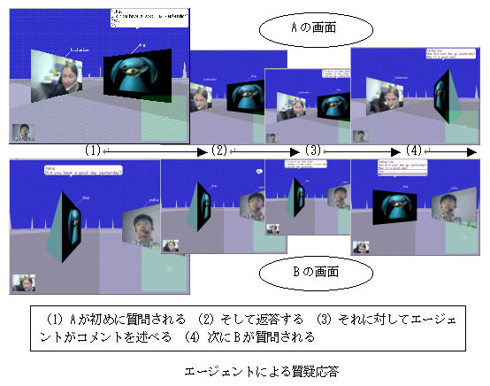
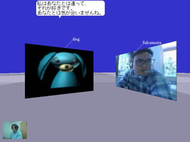
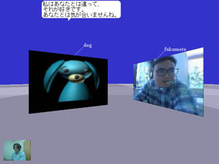

図1 ヘルパーエージェント実験
1. ヘルパーエージェント実験
この実験では仮想環境における人間同士のコミュニケーションを支援するエージェントについて調べた。 このエージェントはパーティにおけるホスト役を模擬しており、 会話が停滞している参加者に共通の話題を与える。 我々はプロトタイプを異文化間コミュニケーションの支援に適応する実験を行った。実験用に、参加者との質疑応答を通して安全な話題を提供するエージェントと、 危険な話題を提供するエージェントを設計した。 エージェントは会話相手や相手国に対する認識に影響を与えた。
 
図2 バランス理論実験
2. バランス理論実験
バランス理論とは社会心理学における認知整合性理論の1つ。
主体Pを中心として、他社Oとある対象X（第三者or事物or事象）の三者関係に適用される理論。
この三者間の関係には図２上のように均衡状態と不均衡状態が存在し、
３つの関係のうち２つが決定されたときに、均衡状態になるように残り１つの関係が誘導されるという理論。
実験内容では、Pを参加者、Oを会話相手、Xをエージェントとして対話を行い、
人間（P又はO）とエージェントの関係を、エージェントの発話により操作できるか調べる。
そして、その際に形成される人間間の関係に、バランス理論が適応できるか調べる